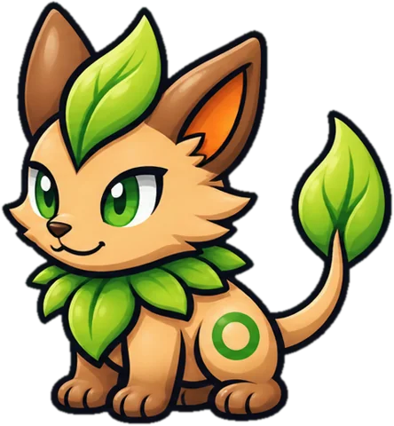

 Grass
GrassTap a stage to read its story.
Leafkit is a small, bright-eyed fox kit with a fresh green coat and a ruff of broad flat leaves around its neck like a flower collar. Two larger leaves sprout from the base of its tail and flutter when it trots. Its paws are quick and dexterous, and it uses them to rearrange fallen leaves into patterns on the forest floor - each pattern slightly different, as though practicing a new pattern. In the bug thicket it follows the sunlight patches, making tiny leaf-fans from fallen fronds to catch the warmth. Its collar-leaves smell of sweet sap after rain.
Field note: Leafkit rearranges fallen leaves into new patterns each morning - no two patterns are ever the same, and it never seems satisfied.
Bug Thicket. Leafkit and its family are found in the Bug Thicket. See everyone who lives there.
Share a Bond Food that matches its types to become friends. Leafkit loves:
A Bond Food is not a trick. It joins your spirit with the Kimuro's spirit, and only when it chooses you.
Print the Kimuro adventure packs: mazes, cards, a board game and Bond Mark medals.
See the printable packs